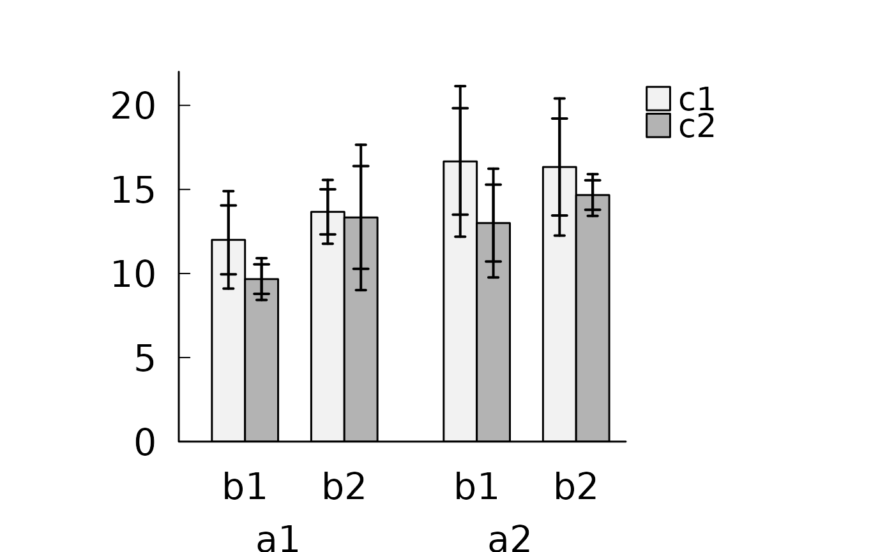
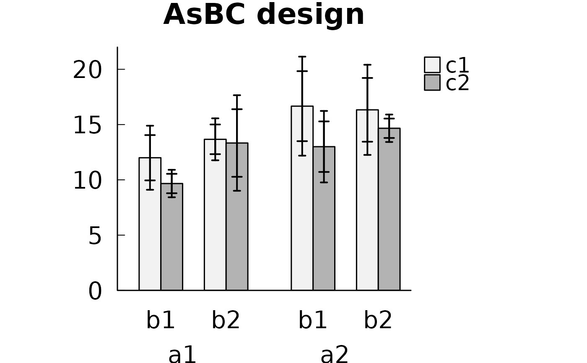

Bar graph with confidence intervals
ci.bars.RdDraws a bar graph of cell means with confidence intervals. Usually called through the bgraph option of anovakun.
Usage
ci.bars(dat, design, factnames = NA, conf.level = 0.95, inn.tier = "cind",
out.tier = NA, main = NULL, ylab = NULL, barmin = 0)Arguments
- dat
A data frame as used inside
anovakun(subject column, factor columns, and the dependent variable in long format).- design
A character string giving the design, e.g.
"As","sA","AsB". Letters beforesare between-subjects factors and letters after it are within-subjects factors.- factnames
Names of the factors. If
NA, letters are used.- conf.level
Confidence level.
- inn.tier
Type of the inner confidence interval (e.g.
"cind").- out.tier
Type of the outer confidence interval, or
NA.- main
Main title of the plot.
- ylab
Label of the y axis.
- barmin
Lower end of the bars.
References
ANOVA-kun: https://riseki.cloudfree.jp/?ANOVA%E5%90%9B
Examples
dat <- data.frame(
A = c("a1", "a1", "a1", "a2", "a2", "a2"),
b1c1 = c(12, 13, 11, 18, 17, 15),
b1c2 = c( 9, 10, 10, 12, 14, 13),
b2c1 = c(14, 14, 13, 16, 15, 18),
b2c2 = c(13, 12, 15, 15, 14, 15)
)
# Usually drawn through the bgraph option of anovakun()
anovakun(dat, "AsBC", 2, 2, 2, bgraph = c("cind", "cin"))

#>
#> [ AsBC-Type Design ]
#>
#> This output was generated by anovakun 4.8.9 under R version 4.6.1.
#> It was executed on Fri Oct 23 07:10:23 2026.
#>
#>
#> << DESCRIPTIVE STATISTICS >>
#>
#> == Cousineau-Morey-Baguley's Difference-Adjusted Normalized Confidence Intervals ==
#> == Cousineau-Morey's Normalized Confidence Intervals ==
#> == 95% confidence intervals are calculated. ==
#>
#> -----------------------------------------------------------------------
#> A B C n Mean S.D. CIND-L CIND-U CIN-L CIN-U
#> -----------------------------------------------------------------------
#> a1 b1 c1 3 12.0000 1.0000 9.9507 14.0493 9.1018 14.8982
#> a1 b1 c2 3 9.6667 0.5774 8.7884 10.5449 8.4246 10.9087
#> a1 b2 c1 3 13.6667 0.5774 12.3251 15.0083 11.7694 15.5640
#> a1 b2 c2 3 13.3333 1.5275 10.2768 16.3898 9.0108 17.6559
#>
#> a2 b1 c1 3 16.6667 1.5275 13.5000 19.8333 12.1883 21.1450
#> a2 b1 c2 3 13.0000 1.0000 10.7135 15.2865 9.7664 16.2336
#> a2 b2 c1 3 16.3333 1.5275 13.4500 19.2167 12.2557 20.4110
#> a2 b2 c2 3 14.6667 0.5774 13.7884 15.5449 13.4246 15.9087
#> -----------------------------------------------------------------------
#>
#>
#> << SPHERICITY INDICES >>
#>
#> == Mendoza's Multisample Sphericity Test and Epsilons ==
#>
#> -------------------------------------------------------------------------
#> Effect Lambda approx.Chi df p LB GG HF CM
#> -------------------------------------------------------------------------
#> Global 0.0000 Inf 11 0.0000 *** 0.3333 0.8563 2.5262 1.0916
#> B 0.7696 0.3928 1 0.5308 ns 1.0000 1.0000 1.0000 1.0000
#> C 0.6011 0.7635 1 0.3822 ns 1.0000 1.0000 1.0000 1.0000
#> B x C 0.3600 1.5325 1 0.2157 ns 1.0000 1.0000 1.0000 1.0000
#> -------------------------------------------------------------------------
#> LB = lower.bound, GG = Greenhouse-Geisser
#> HF = Huynh-Feldt-Lecoutre, CM = Chi-Muller
#>
#>
#> << ANOVA TABLE >>
#>
#> ----------------------------------------------------------------
#> Source SS df MS F-ratio p-value
#> ----------------------------------------------------------------
#> A 54.0000 1 54.0000 648.0000 0.0000 ***
#> s x A 0.3333 4 0.0833
#> ----------------------------------------------------------------
#> B 16.6667 1 16.6667 8.0000 0.0474 *
#> A x B 6.0000 1 6.0000 2.8800 0.1649 ns
#> s x A x B 8.3333 4 2.0833
#> ----------------------------------------------------------------
#> C 24.0000 1 24.0000 15.1579 0.0176 *
#> A x C 2.6667 1 2.6667 1.6842 0.2641 ns
#> s x A x C 6.3333 4 1.5833
#> ----------------------------------------------------------------
#> B x C 6.0000 1 6.0000 4.8000 0.0936 +
#> A x B x C 0.0000 1 0.0000 0.0000 1.0000 ns
#> s x A x B x C 5.0000 4 1.2500
#> ----------------------------------------------------------------
#> Total 129.3333 23 5.6232
#> +p < .10, *p < .05, **p < .01, ***p < .001
#>
#>
#> << POST ANALYSES >>
#>
#> < SIMPLE EFFECTS for "B x C" INTERACTION >
#>
#> -------------------------------
#> B C n Mean S.D.
#> -------------------------------
#> b1 c1 6 14.3333 2.8048
#> b1 c2 6 11.3333 1.9664
#> b2 c1 6 15.0000 1.7889
#> b2 c2 6 14.0000 1.2649
#> -------------------------------
#>
#> --------------------------------------------------------------------------
#> Effect Lambda approx.Chi df p LB GG HF CM
#> --------------------------------------------------------------------------
#> B at c1 0.1479 2.8665 1 0.0904 + 1.0000 1.0000 1.0000 1.0000
#> B at c2 1.0000 -0.0000 1 1.0000 ns 1.0000 1.0000 1.0000 1.0000
#> C at b1 0.7197 0.4933 1 0.4824 ns 1.0000 1.0000 1.0000 1.0000
#> C at b2 0.7197 0.4933 1 0.4824 ns 1.0000 1.0000 1.0000 1.0000
#> --------------------------------------------------------------------------
#> LB = lower.bound, GG = Greenhouse-Geisser
#> HF = Huynh-Feldt-Lecoutre, CM = Chi-Muller
#>
#> -----------------------------------------------------------
#> Source SS df MS F-ratio p-value
#> -----------------------------------------------------------
#> B at c1 1.3333 1 1.3333 0.6154 0.4766 ns
#> s x B at c1 8.6667 4 2.1667
#> -----------------------------------------------------------
#> B at c2 21.3333 1 21.3333 18.2857 0.0129 *
#> s x B at c2 4.6667 4 1.1667
#> -----------------------------------------------------------
#> C at b1 27.0000 1 27.0000 19.0588 0.0120 *
#> s x C at b1 5.6667 4 1.4167
#> -----------------------------------------------------------
#> C at b2 3.0000 1 3.0000 2.1176 0.2193 ns
#> s x C at b2 5.6667 4 1.4167
#> -----------------------------------------------------------
#> +p < .10, *p < .05, **p < .01, ***p < .001
#>
#> output is over --------------------///
#>
# Direct use on the long-format data that anovakun() builds internally
long <- anovakun(dat, "AsBC", 2, 2, 2, tech = TRUE, data.frame = TRUE)$DATA.FRAME
ci.bars(long, "AsBC", inn.tier = "cind", out.tier = "cin", main = "AsBC design")
